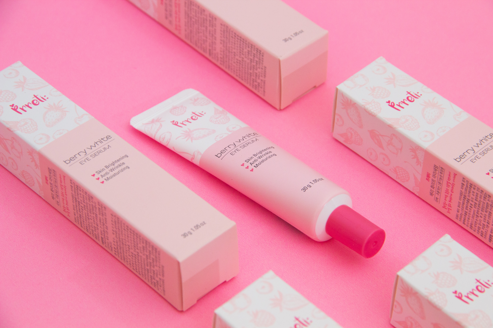

A importância dos cosméticos para nossa pele.
A mídia, infelizmente, veicula apenas como questão de beleza o
uso de cosméticos, e não como questão de saúde. Até nós achamos que
certos cuidados são apenas vaidade e frescura.
Fazer uso de um hidratante não é luxo, nem vaidade,
e sim uma necessidade. Já que estamos vivendo mais, precisamos
prolongar a saúde da pele, afinal ela é o maior bem do corpo e
também merece ser conservada. Não há como negar que um bom
creme contribui para a sua manutenção.
Baseados nesse aumento da expectativa de vida, temos que seguir uma rotina de cuidados e fazer uso de produtos que possam ajudar na conservação e saúde da pele.
Tendo em vista que a pele é o nosso órgão menos protegido,
devemos ter o cuidado igual ao que temos com nossos órgãos vitais.
A poluição, estresse, mudanças de estação, danos mecânicos,alimentação
inadequada e também a idade são fatores agravantes para a saúde da pele.
O uso de creme hidratante é necessário para manter uma boa aparência.
Além do mais, cultivar uma boa aparência passou a ser visto como
uma demonstração de cuidado com a saúde, mas infelizmente os
cremes são considerados produtos supérfluos,
(tanto que os impostos da embalagem e das matérias-primas ainda
são altos).
Também os homens estão percebendo que fazer uma limpeza de pele e usar um hidratante não é somente vaidade. Fazer uso de
cosméticos de boa qualidade é imprescindível em algumas fases da vida.
Todo indivíduo em alguma fase de sua vida vai sentir a mudança na pele,
que é uma decorrência do envelhecimento, mais comum após os 40 anos.
Nem mesmo os mais avançados centros de estéticas do mundo, tem
intervenções efetivas. Apesar de tanta evolução nos tratamentos,
o que existe são meros paliativos, que amenizam os problemas de
desgastes da pele. O envelhecimento da pele é o declínio “inevitável”
das suas funções fisiológicas como um todo, que ocorre ao longo do tempo.
Mas alguns cuidados podem retardar esse processo de envelhecimento,
prevenindo, retardando ou até evitando as males que
causam danos às nossas células.
Existem elementos e ativos naturais que são capazes de minimizar e até inibir as degenerações vasculares que obstruem os microvasos e permitem que o sistema dérmico se regenere, melhorando a elasticidade e impedindo a atrofia muscular.
E já que precisamos prolongar a jovialidade e saúde da pele, temos consciência de que ela precisa ser conservada e não há como negar que um bom creme contribui para a sua manutenção e jovialidade, então, tem-se que escolher bem esse produto.
Ter uma pele jovial e saudável está ao nosso alcance, desde que estejamos dispostos a seguir uma rotina de cuidados. Isso inclui fazer uso de produtos que realmente tenham concentrações reais de substâncias e ativos naturais que funcionem de verdade.
Lembre-se também do protetor solar, o uso contínuo é imprescindível no cuidados com a pele. Não esqueça de levar sempre em conta o seu tipo de pele, essa informação é fundamental na escolha do produto certo.
Seu rosto e sua pele são seu cartão de visitas e os cosméticos estão ai ao nosso dispor. Faça bom uso deles!

Descubra os benefícios de usar cosméticos naturais

Com a crescente conscientização das pessoas sobre a importância de preservar o meio ambiente e
adotar um modo de vida mais saudável e sustentável,
os cosméticos naturais têm se tornado uma tendência.
Se você faz parte do grupo que se importa com a origem das mercadorias que
consome e prefere comprar produtos que causam o menor impacto possível à natureza,
este artigo vai te ajudar a saber identificar esses itens e mostrar algumas das
vantagens de optar por maquiagens e outros cosméticos de origem natural. Boa leitura!
O que são considerados cosméticos naturais
Como a busca por produtos orgânicos e naturais se tornou uma tendência, e
muitas marcas têm usado essa nomenclatura para impulsionar suas vendas, na hora de
comprar cosméticos naturais é preciso estar bem atento para ter certeza de que está
comprando itens que realmente podem ser encaixados nessa categoria.
Para que um cosmético seja considerado verdadeiramente natural, ele deve:
- utilizar tecnologias limpas e sustentáveis na obtenção dos extratos que serão utilizados em sua fórmula
- ter sua concentração de extratos ativos extensivamente testada, pois determinadas concentrações de extratos naturais são tóxicas às células humanas
- rastrear a matéria-prima vegetal utilizada, para ter certeza de que ela não está contaminada por bactérias, fungos ou agrotóxicos
- garantir que todos os ingredientes da formulação sejam conseguidos de forma sustentável, sem causar impactos negativos ao meio ambiente.